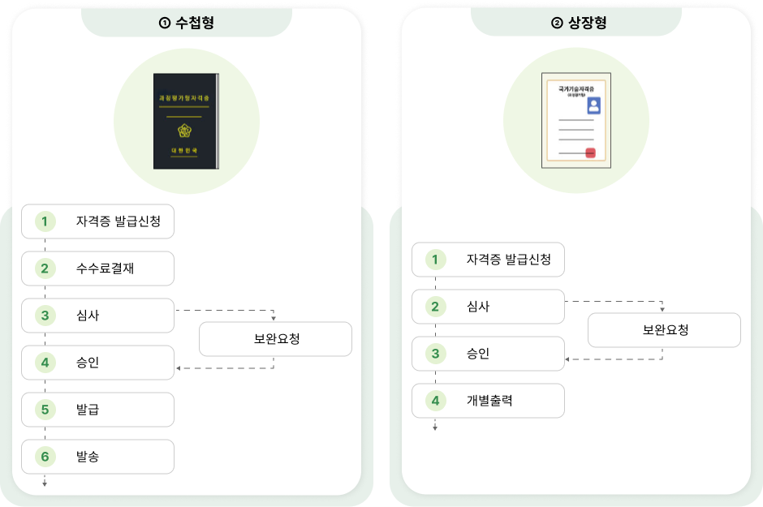

온라인 신청
대상
안전원에 자격취득 당시 사진이 등록된 신청자
자격 발급절차

이미지는 자격증 발급 과정의 두 가지 유형을
설명합니다. 왼쪽에는 “수첩형” 발급 과정이,
오른쪽에는 “상장형” 발급 과정이 다이어그램으로
나타나 있습니다.
1. 수첩형 발급 과정:
• 상단에 수첩형 자격증 이미지가 있으며, 아래에 발급
절차가 단계별로 정리되어 있습니다.
• 단계:
1. 자격증 발급신청
2. 수수료 결제
3. 심사 (보완 요청 가능)
4. 승인
5. 발급
6. 발송
2. 상장형 발급 과정:
• 상단에 상장형 자격증 이미지가 있으며, 아래에 발급
절차가 단계별로 정리되어 있습니다.
• 단계:
1. 자격증 발급신청
2. 심사 (보완 요청 가능)
3. 승인
4. 개별 출력
각 과정은 화살표와 박스를 사용하여 단계별 흐름을
명확히 보여줍니다. “보완 요청”은 필요한 경우 중간
과정에서 발생할 수 있음을 나타냅니다.
방문 신청
대상
온라인 신청이 불가하거나 인적사항(주민등록번호, 성명 등)
변경을 원하는 신청자
구비서류
※ 위의 양식 안전원 사무실 비치
자격 재발급 안내 구비서류
| 구분 |
구비서류 |
| 자격증(자격수첩)분실 |
- 자격증 재발급 신청서
-
반명함판(가로 3.5cm x 세로 4.5cm) 1장
(최근 6개월 이내에 촬영)
-
수수료 : 수첩형(10,000원), 상장형(무료)
- 신분증
-
※ 대리인 신청 시 신청인 및 대리인 신분증
지참
|
자격증(자력수첩)이
헐어 못쓰게 된 경우
|
- 자격증 재발급 신청서
- 훼손된 자격수첩(해당자에 한함)
-
반명함판(가로 3.5cm x 세로 4.5cm) 1장
(최근 6개월 이내에 촬영)
-
수수료 : 수첩형(10,000원), 상장형(무료)
- 신분증
-
※ 대리인 신청 시 신청인 및 대리인 신분증
지참
|
인적사항
(주민등록번호, 성명 등)을
변경한 경우
|
- 자격증 재발급 신청서
-
주민등록 초본 또는 기본증명서 (개명,
주민등록번호 변경자 등)
-
반명함판(가로 3.5cm x 세로 4.5cm) 1장
(최근 6개월 이내에 촬영)
-
수수료 : 수첩형(10,000원), 상장형(무료)
- 신분증
-
※ 대리인 신청 시 신청인 및 대리인 신분증
지참
|